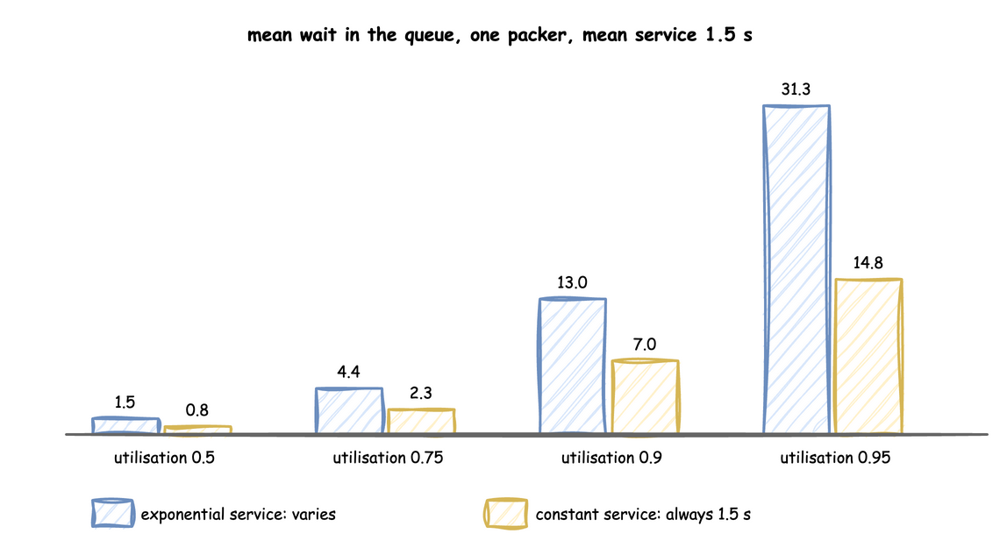

Queues and Capacity
A model is stable when, over time, its resources finish work as fast as it arrives. Then queues rise and fall but stay bounded, and the waits in the records look like a working system. When work arrives faster than it can be finished, the queue grows for as long as the simulation runs, every entity waits longer than the one before, and the data stops looking real. This page shows how to tell the two apart before you run, and what to change.
Utilisation
Utilisation is the share of time a resource is busy. For one resource:
utilisation = arrival rate × mean service time ÷ number of units
The shop in First Simulation has orders arriving at 0.5 per second and 1.5 seconds of packing by one packer: 0.5 × 1.5 ÷ 1 = 0.75, so the packer is busy three quarters of the time.
- Below 1, the model is stable.
- At 1 or above, it is not: the queue grows without limit. In a run at utilisation 1.1, the packer's queue held 7,151 orders halfway through 200,000 simulated seconds and 14,046 at the end.
The same calculation applies to every resource in the model. The one closest to 1 is the bottleneck: it decides how long everything waits.
Waits Grow Before You Reach 1
A stable model can still wait a long time. Waits grow sharply as utilisation approaches 1, and more variable times make it worse. These are measured mean waits in the queue for one packer with a mean service of 1.5 seconds, each over 200,000 simulated seconds:

Two rules follow, and the measurements match both:
- With exponential service times, the mean wait for one unit is
utilisation ÷ (1 − utilisation) × mean service time. At 0.75 that is 3 × 1.5 = 4.5 seconds; the run measured 4.42. Going from 0.9 to 0.95 more than doubles it. - With constant service times the wait is half of that, because there is no unusually long job holding up the queue. Spread in the service time, or in the gaps between arrivals, always lengthens waits.
You can measure any model the same way:
def mean_wait(rate, service, packers=1, until=200_000, seed=1):
"""Mean time an order waits for a packer, over `until` simulated seconds."""
env = DynamicRealtimeEnvironment(factor=0.0) # unpaced: as fast as possible
env.registry.register_sim_parameter(
SimParameter(
sim_id="S",
arrival={"orders": DistributionConfig(dist="exponential", rate=rate)},
service={"packing": service},
resources={"packers": CapacityConfig(current_cap=packers, max_cap=packers)},
)
)
packers = DynamicResource(env, "S", "packers")
sampler = Sampler(rng=np.random.default_rng(seed))
waits = []
def order():
queued = env.now
with packers.request() as request:
yield request
waits.append(env.now - queued) # time spent in the queue
yield env.timeout(
sampler.sample(env.registry.get_config("S.service.packing"))
)
def arrivals():
gap = env.registry.get_config("S.arrival.orders")
while True:
yield env.timeout(sampler.sample(gap))
env.process(order())
env.process(arrivals())
try:
env.run(until=until)
finally:
env.teardown()
return float(np.mean(waits))
utilisation = 0.75
rate = utilisation / 1.5 # orders per second, for 1.5 s of work each
exponential = DistributionConfig(dist="exponential", rate=1 / 1.5)
measured = mean_wait(rate, exponential)
expected = utilisation / (1 - utilisation) * 1.5 # 4.5 s, for one packers
print(f"measured {measured:.2f} s, expected {expected:.2f} s")
Making a Model Stable
To bring a resource below 1, change any term of the formula:
| Change | How | Example, from 0.75 |
|---|---|---|
| more units | raise current_cap (up to max_cap) |
2 packers: 0.375 |
| faster work | lower the service mean |
1.0 s of packing: 0.5 |
| fewer arrivals | lower the arrival rate |
0.4 per second: 0.6 |
Each of these is a live parameter, so a running simulation can be stabilised, or pushed into overload on purpose, through the registry: a scenario step, a connector message or a process, as Live Parameters explains. A capacity change takes effect at once for idle units; Resources explains what happens to units still busy when it drops.
Watching It While It Runs
Publish the queue and the busy units of each resource, and read them where the records go:
@app.telemetry_loop(interval=10.0)
def packer_stats(context: SimulationContext):
packers = context.get_resource("packers")
context.publish("packers_busy", packers.in_use) # as Shop.packers_busy
context.publish("packers_waiting", len(packers.queue.items)) # requests waiting
def packer_stats_process(env, packers):
"""What @app.telemetry_loop does, by hand."""
while True:
env.publish_telemetry("Shop.packers_busy", packers.in_use)
env.publish_telemetry("Shop.packers_waiting", len(packers.queue.items))
yield env.timeout(10.0)
A queue that keeps climbing from one report to the next, while in_use stays at the capacity, is a resource above utilisation 1.
Points to Remember
- Start-up. A run starts empty, so its first minutes have shorter queues than the rest. Leave them out of any measurement, or run long enough that they do not matter.
- Long runs. Averages from a short run are noisy, the more so near utilisation 1. The measurements above use 200,000 simulated seconds, which takes about a second unpaced.
- Breaks lower capacity. A packer on a break 5 seconds in every 50 has about 90% of its capacity, so include that in the formula.
- Analysis tools are planned:
desflow explainwill show a model as a graph, compute each resource's utilisation and point to the bottleneck before a run; see the Roadmap.